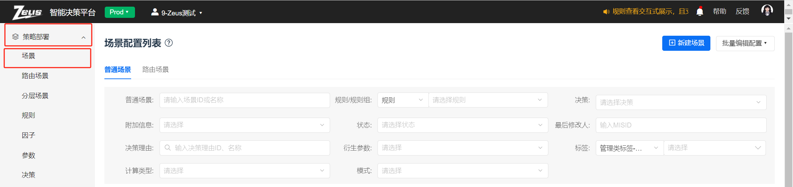
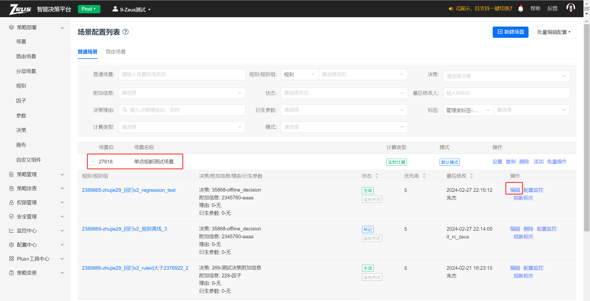
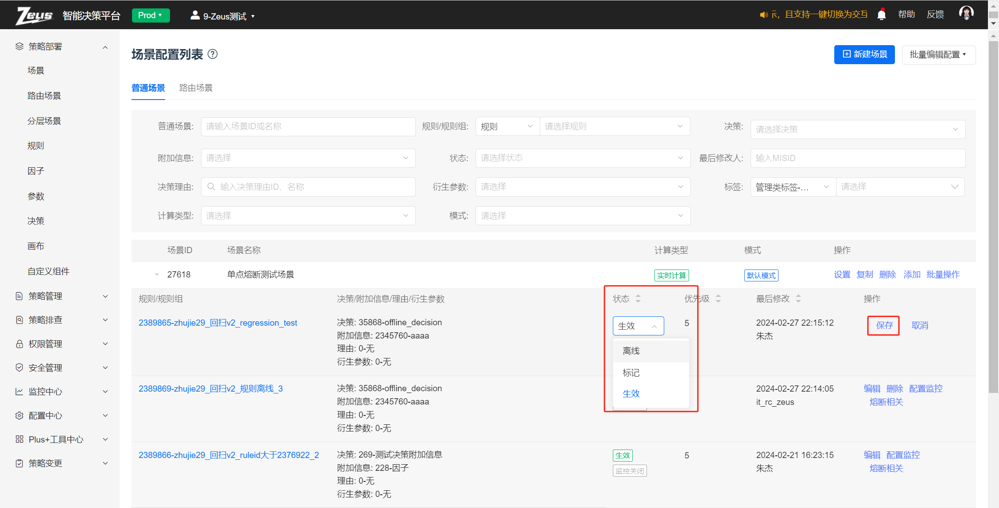

说明：规则在场景中生效
一、背景
如果业务开通了强制标记权限，则新添加的场景配置必须在场景下标记30分钟方可再修改状态为生效。标记满足30分钟，会有大象通知标记完成。因此，在标记时间满足后，可以将场景状态改为生效。
二、操作说明
step1：入口
策略部署—>场景

step2：场景配置列表—修改场景下规则的状态
进入场景配置列表，选中相应场景，点击编辑，将状态改为生效，点击保存


保存日期：2026-11-18 · 查看学城原文
如果业务开通了强制标记权限，则新添加的场景配置必须在场景下标记30分钟方可再修改状态为生效。标记满足30分钟，会有大象通知标记完成。因此，在标记时间满足后，可以将场景状态改为生效。
策略部署—>场景

进入场景配置列表，选中相应场景，点击编辑，将状态改为生效，点击保存

